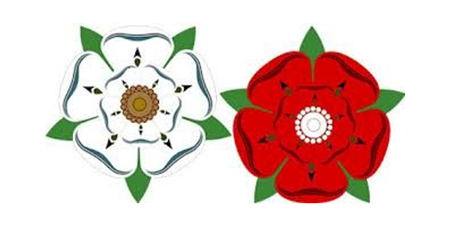
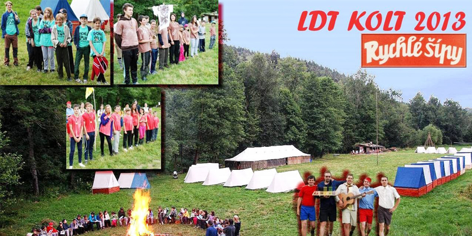
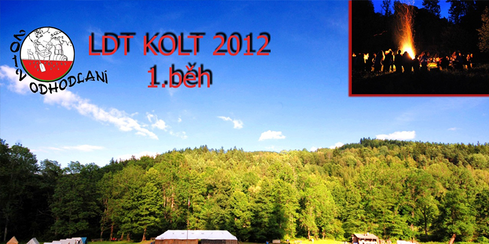
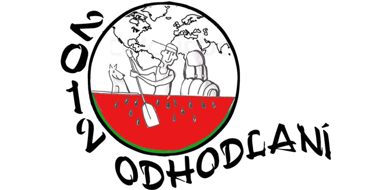
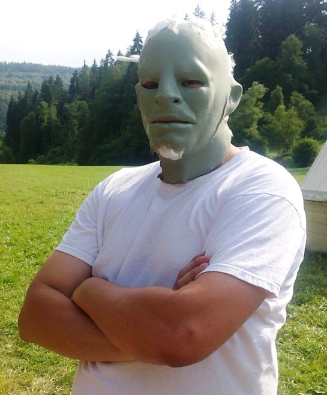
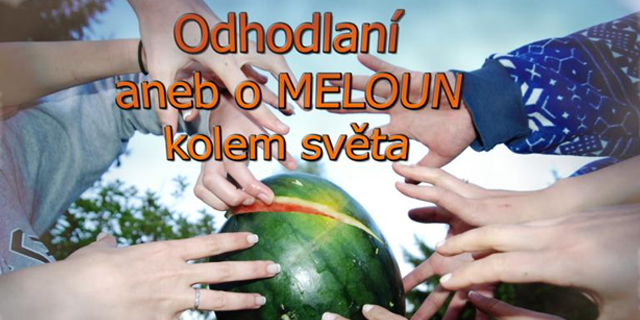

Třetí díl Londýnské kroniky z letošního Čeřína
Nadále pokračujeme ve skvělém duchu Války růží - podrobnosti v již třetím díle Londýnské kroniky.
Londýnská kronika 3 (doplnit)
Váš displej či okno prohlížeče je příliš malé pro zobrazení této stránky. Zkuste zapnout zobrazení webu pro PC.


Nadále pokračujeme ve skvělém duchu Války růží - podrobnosti v již třetím díle Londýnské kroniky.
Londýnská kronika 3 (doplnit)
1. běh probíhá dle plánu a my Vám přinášíme stručný souhrn událostí prvních dnů tábora ve formě naší již tradiční kroniky
Londýnská kronika 2 (doplnit)
Jako druhé přiblížení děje naší letošní celotáborové hry přinášíme ochutnávku v podobě první části kroniky...
Zároveň prosíme rodiče, aby dětem nezapomněli přibalit bílé prostěradlo (příp. odpovídající kus bílého plátna)
Londýnská kronika (doplnit)
Píše se rok 1455 a my se ocitáme ve středověké Anglii, která je zdecimována Stoletou válkou. K jaké růži se přidáme? Za koho budeme bojovat? Za Yorky či za Lancastery? Toť otázka… Odpověď se snad dozvíme na letním táboře v Čeříně léta páně 2014.
Více než 600ks fotek na Vás čeká v letošní fotogalerii z 1. běhu letního tábora v Čeříně. Parta okolo Rychlých šípu prožila mnoho zážitků, o které se teď rádí podělíme i s ostatními:
Fotogalerie 2013 (doplnit) Pozdě ale přeci :) Dočkali jste se fotek z letošního letního 1. běhu tábora, který se snad povedl dle představ nás vedoucích i dětí. Fotky najdete v příslušné sekci, tak si je užijte:
Fotogalerie 2012 (doplnit) "Tábor a soutěž Odhodlaných je v plném proudu a abyste měli aktuální info, přinášíme Vám první číslo Magazínu Odhodlaných, kde najdete podrobnosti ze soutěže a aktuálního dění v táboře!
Magazín Odhodlaných 1 (doplnit)
Tábor je již za dveřmi a se zdravicí přišel nečekaně i jeden z bývalých vítězů předchozích ročníků soutěže. Zanechal nám krátký vzkaz se svou fotkou a logem, které pro nás ochotně vytvořil...:
"Milí odhodlaní, začátek soutěže se kvapem blíží a pro tuto příležitost bych Vám všem chtěl popřát mnoho štěstí v soutěžení, získání nových zážitků a prožití skvělého dobrodružství, které si jistě moc užijete. Nezapomeňte s sebou přibalit bílé triko, dobrou náladu a pozitivní přístup. Mějte se fajn a hlavně buďte ODHODLANÍ..."
 A i tento rok přichází všemi očekávaná reality show Odhodlaní aneb cesta o meloun kolem světa. I pro tento ročník budou vybráni jen ti nejschopnější. Nechte se překvapit. Uzávěrka přihlášek je těsně před začátkem 1.běhu ...
DOPORUČUJEME PŘIBALENÍ BÍLÉHO TRIČKA PRO KAŽDÉ DÍTĚ, CO BUDE ODHODLÁNO :)
...a možná se těště i na minulého vítěze soutěže!!!
10.5.2012 se od 18:00 u piknikového místa u Hořejšího rybníka na pomezí Hrdlořez a Vysočan proběhlo myslíme nadmíru podařené opékání a společné setkání. Na akci dorazilo přibližně 80 přijemných tváří a doufáme, že jste si to užili, tak jako my!